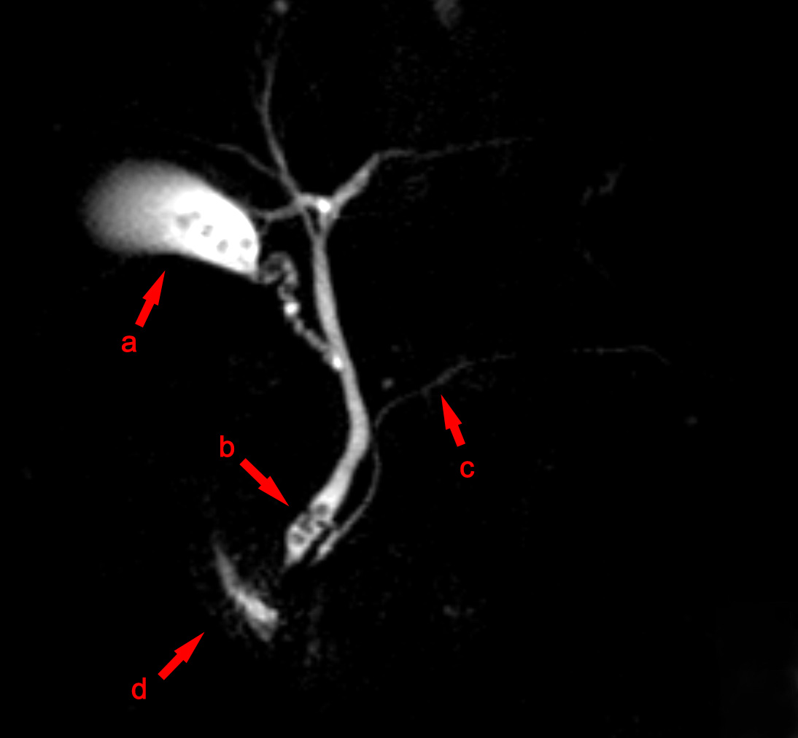

Ficha del catálogo
Coledocolitiasis
- Sistema
- Digestivo
- Modalidad
- RM
- Región
- Vía biliar extrahepática
- Dificultad
- Intermedio
Es la presencia de cálculos en el conducto colédoco, generalmente migrados desde la vesícula biliar. Puede cursar asintomática o producir ictericia obstructiva, dolor y elevación de bilirrubina y fosfatasa alcalina. Sus complicaciones más temidas son la colangitis aguda y la pancreatitis biliar.
Técnica
La colangiorresonancia es el estudio no invasivo de referencia. Se realiza con ayuno de 4 a 6 horas y, si se dispone, con un agente negativo oral que suprima la señal del líquido gástrico y duodenal. Se adquieren secuencias muy potenciadas en T2 en cortes finos y en bloques gruesos radiales centrados en el hilio y en la porción distal del colédoco.
Qué observar
- Defecto de repleción redondeado y de bordes definidos, con baja señal dentro de la bilis hiperintensa
- Dilatación del colédoco por encima de 6 a 7 mm, con margen mayor en pacientes colecistectomizados o de edad avanzada
- Punto de transición entre el segmento dilatado y el segmento normal
- Dilatación de las vías biliares intrahepáticas y del conducto pancreático principal
- Signos de colangitis como engrosamiento y realce parietal del conducto
- Litiasis vesicular concomitante y estado de la pared vesicular
Hallazgos
Se identifican imágenes hipointensas en T2, redondeadas u ovoides, situadas en la porción declive del colédoco distal y rodeadas por bilis hiperintensa, lo que produce el clásico signo del menisco o de la diana. Por encima del cálculo la vía biliar está dilatada y por debajo recupera su calibre. En el ultrasonido el lito aparece como foco ecogénico con sombra acústica dentro del conducto, aunque el gas duodenal limita con frecuencia la visualización del tercio distal.
Perlas
Un colédoco de calibre normal no descarta coledocolitiasis: Hasta un tercio de los pacientes con litos en la vía biliar tienen un conducto no dilatado, sobre todo en el episodio agudo temprano. Por eso, ante enzimas colestásicas elevadas y ultrasonido no concluyente, la colangiorresonancia debe realizarse aunque el calibre del colédoco parezca normal.
Diagnóstico diferencial
- Colangiocarcinoma distal
- Estenosis con realce y engrosamiento parietal, con transición abrupta e irregular en lugar de un defecto redondeado móvil.
- Neoplasia de cabeza de páncreas
- Signo del doble conducto con masa hipovascular en la cabeza pancreática y atrofia distal del parénquima.
- Burbuja de aire en la vía biliar
- Se sitúa en la porción no declive del conducto y cambia de posición con el decúbito.
- Colangitis esclerosante primaria
- Estenosis multifocales alternando con segmentos dilatados en aspecto arrosariado, sin cálculo único obstructivo.
- Síndrome de Mirizzi
- El cálculo está impactado en el cístico o en el infundíbulo y comprime el hepático común desde fuera.
Simuladores
- Neumobilia tras esfinterotomía o derivación biliodigestiva
- Artefacto de flujo o de pulsatilidad de la arteria hepática que cruza el conducto
- Barro biliar denso y coágulos, que crean defectos sin sombra ni bordes netos
Por modalidad
- US
- Primer estudio: Valora litiasis vesicular y el calibre del colédoco, pero su sensibilidad para el lito distal es limitada por el gas intestinal
- TC
- Útil en urgencias para descartar complicaciones y masas (detecta solo los cálculos calcificados o de alta densidad)
- RM
- La colangiorresonancia ofrece la mejor sensibilidad no invasiva y mapea toda la anatomía biliar antes de un procedimiento
Protocolo
Colangiorresonancia con secuencias T2 de eco de espín rápido en cortes finos de 2 a 3 mm, adquisiciones de bloque grueso radiales en apnea, T2 con y sin supresión grasa y T1 en fase y fuera de fase. Se añade difusión para valorar procesos inflamatorios o tumorales asociados. La sincronización respiratoria mejora la resolución en pacientes que no colaboran con la apnea.
Clasificación
Existen estratificaciones de riesgo de coledocolitiasis que combinan criterios clínicos, bioquímicos y ecográficos. Se consideran predictores muy fuertes la visualización directa del lito en la vía biliar, la colangitis aguda y una bilirrubina superior a 4 mg/dL con conducto dilatado. El riesgo alto orienta a colangiografía retrógrada endoscópica directa, el riesgo intermedio a colangiorresonancia o ultrasonido endoscópico previos, y el riesgo bajo a colecistectomía sin exploración adicional de la vía biliar.
Errores frecuentes
- Interpretar como cálculo un vacío de señal por flujo o por clip quirúrgico metálico
- Descartar el diagnóstico solo porque el colédoco no está dilatado
- No revisar el tercio distal retroduodenal, que es la localización más frecuente del lito impactado

coledocolitiasis colangiorresonancia via biliar ictericia obstructiva colangitis colédoco litiasis